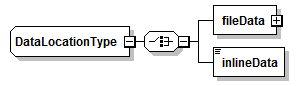
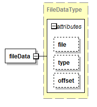
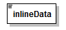

| diagram |  | ||
| children | fileData inlineData | ||
| used by |
|
||
| source | <xs:complexType name="DataLocationType"> <xs:choice> <xs:element name="fileData" type="FileDataType"/> <xs:element name="inlineData" type="InlineDataType"/> </xs:choice> </xs:complexType> |
| diagram |  | ||||||||||||||||||||||||
| type | FileDataType | ||||||||||||||||||||||||
| properties |
|
||||||||||||||||||||||||
| attributes |
|
||||||||||||||||||||||||
| source | <xs:element name="fileData" type="FileDataType"/> |
| diagram |  | ||||
| type | InlineDataType | ||||
| properties |
|
||||
| source | <xs:element name="inlineData" type="InlineDataType"/> |